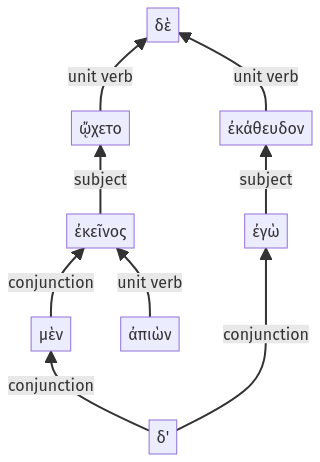

Lysias, Oration 1, 1.23.24-1.23.35a
1.23.14-1.23.23a | 1.23.36-1.23.51a
Sentence 64
1.23.24-1.23.35a
ἐπειδὴ δὲ καλῶς αὐτῷ εἶχεν, ἐκεῖνος μὲν ἀπιὼν ᾤχετο, ἐγὼ δ' ἐκάθευδον.
2 ἐπειδὴ καλῶς αὐτῷ εἶχεν
1 ἐκεῖνος μὲν
2 ἀπιὼν
1 ᾤχετο
1 ἐγὼ δ' ἐκάθευδον
ἐπειδὴ δὲ καλῶς αὐτῷ εἶχεν, ἐκεῖνος μὲν ἀπιὼν ᾤχετο, ἐγὼ δ' ἐκάθευδον.
Highlighting:
- connecting words
- unit verb
- subject
- object
Color code:
- Independent clause (level 1, intransitive verb)
- Independent clause (level 1, intransitive verb)
- subordinate clause (level 2, transitive verb)
- circumstantial participle (level 2, intransitive verb)
